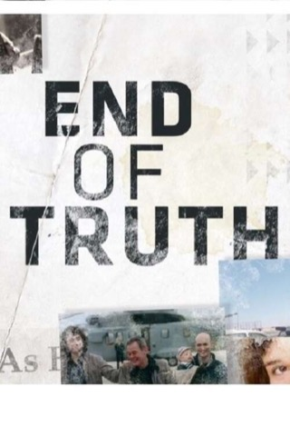
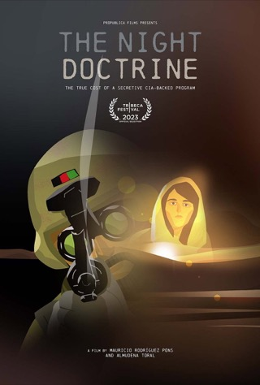

About the film
END OF TRUTH is an emotionally powerful investigation into the political and criminal enterprise of kidnappings as ISIS rose to power in war torn Syria. The documentary retraces the kidnapping of James Foley, a freelance reporter ultimately beheaded by ISIS after nearly two years in captivity, and John Cantlie, a hard-nosed correspondent who ventured back to the same region where he had already been kidnapped once. By intercutting exclusive footage with intimate interviews of negotiators, investigators, fixers and even a used car salesman who are caught up in the confusion, the film examines the terrible consequences of misinformation when lives are at stake.
At the festival
- 2017 World Premiere · Sunday, October 22, 2017 · 7:00 PM · The Naval Heritage CenterDiscussion with filmmaker following screening
More films on these topics
 Killing AnnaSam Benstead2026 · 76 min
Killing AnnaSam Benstead2026 · 76 min Rehearsals for a RevolutionPegah Ahangarani2026 · 95 min
Rehearsals for a RevolutionPegah Ahangarani2026 · 95 min The Secret Reading Club of KabulShakiba Adil, Elina Hirvonen2026 · 95 min
The Secret Reading Club of KabulShakiba Adil, Elina Hirvonen2026 · 95 min One BulletCarol Dysinger2023 · 90 min
One BulletCarol Dysinger2023 · 90 min The Lost Souls of SyriaStéphane Malterre2023 · 99 min
The Lost Souls of SyriaStéphane Malterre2023 · 99 min
The Night DoctrineMauricio Rodriguez-Pons, Almudena Toral2023 · 16 min